课表、提醒与小组件
一个应用装下整个学期
课简是一款开源免费、没有广告的 Android 课表。登录教务一键导课，快上课时准时提醒，桌面小组件随手看下一节。
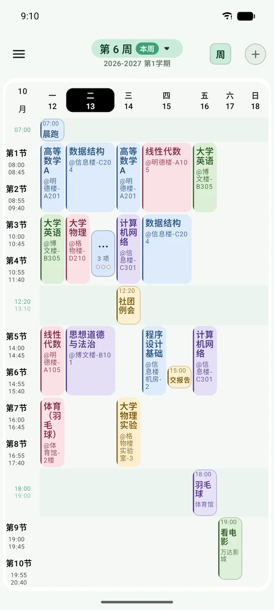
一整周的课，
一屏看完
节次平铺进一屏，不用上下滑；想看细节就双指放大。
- 周视图 / 日视图周视图一屏看全，日视图左右滑切换日期
- 今日概览与时间线今天的日视图显示当前 / 下一节课与上下课倒计时，点开查看全天安排和冲突
- 把自己的事排进去组会、社团、约球按真实时间排进课表，撞课时并排显示
- 双指缩放放大到 300% 任意拖动，表头与节次栏冻结在边上
- 调课停课随手改长按卡片拖到别的日子；也能整天调休、单停一门课
- 单双周与连堂任意周次组合，连堂课渲染成整块
- 节假日自动更新放假与调休联网静默同步，也可手动补
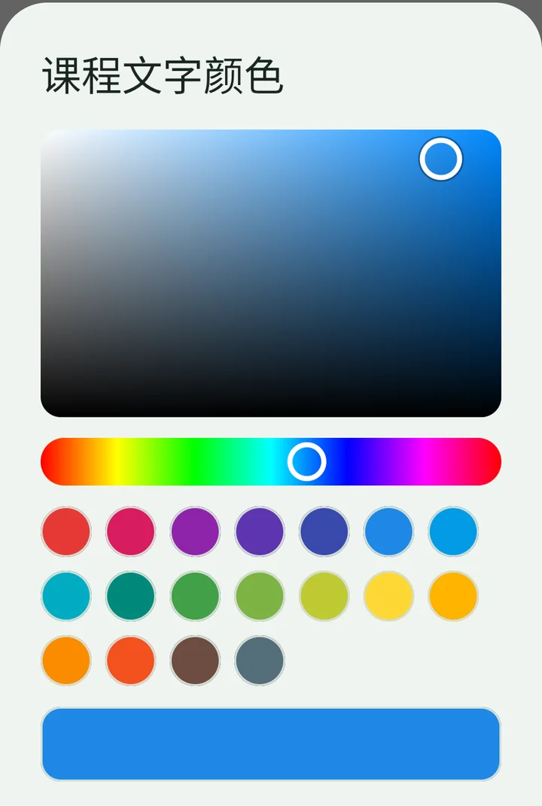
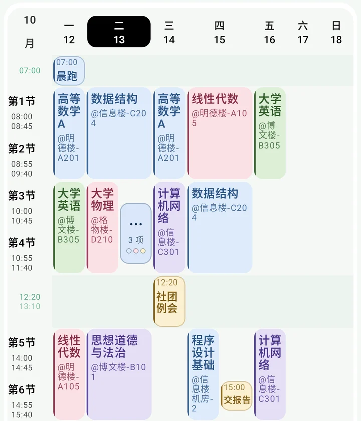
好看，
也按你的喜好来
从主题色到每一条网格线，都能自己调。
- 全局调色盘文字、表头、卡片、网格线、主题色，拖色块就能选
- 自定义背景用自己的图当课表背景，可裁切
- 长课名自动缩小按格子剩余空间缩字号，课名和地点尽量都显示全
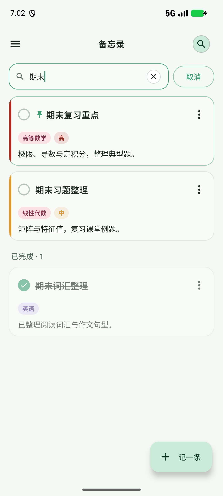
每门课，
一个笔记本
作业、实验报告、考试范围，记在对应的课下面。
- 笔记内容一搜就到跨笔记本检索标题、完整正文和课程信息，已完成笔记也能找到；清空后恢复原筛选
- 清单与进度复选框清单在卡片上直接勾，进度一目了然
- 优先级与截止时间要紧的置顶，总览里看到待办、今天到期与已逾期
- 所见即所得列表、标题、引用、粗体编辑时直接渲染
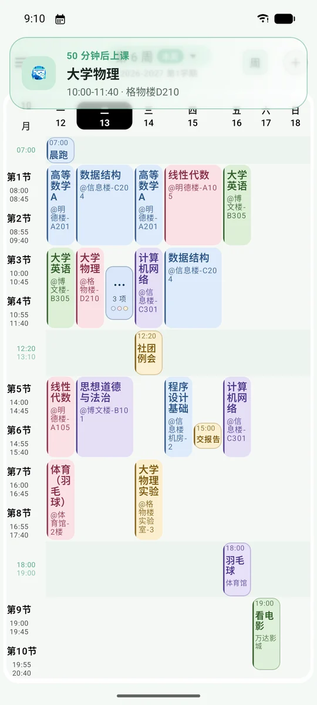
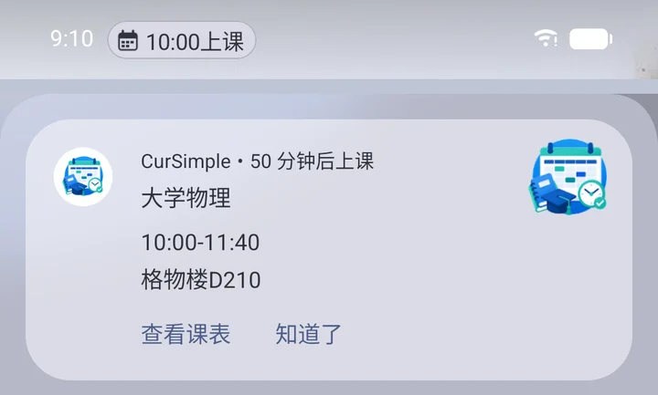
快上课了，
它会先叫你
课名、时间、教室一起弹出来，锁屏和状态栏上都看得到。
- 三种提醒样式系统原生、品牌卡片、毛玻璃悬浮窗，滑一下就收起
- 状态栏上课胶囊支持实时活动的手机在时钟旁挂上「10:00 上课」，小米走焦点通知
- 不漏一节提醒点错过但还没上课，打开 App 立即补发
- 静默守护不常驻通知，被系统清掉的提醒与闹钟自动重新挂上
- 按节次定闹钟「节次 + 条件 + 动作」规则生成闹钟，早八不再睡过
- 假日闹钟按规则跳过单个闹钟可选择「节假日也响」，手动静音日期仍优先
- 上课自动静音按作息进出静音，下课恢复原来的铃声模式
- 机型放行引导按这台手机列出要打开的权限，点一下直达系统设置
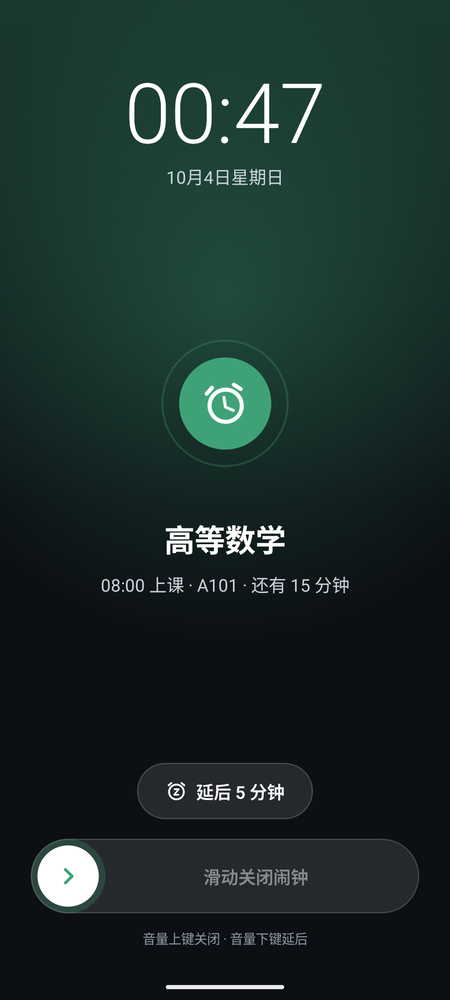
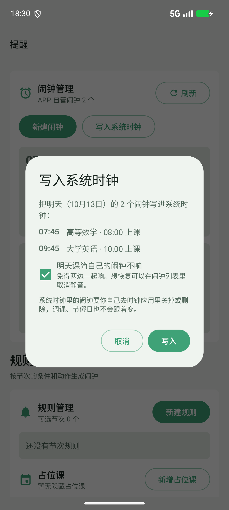
明天的闹钟，
也能交给系统时钟
在闹钟页手动写入明天的安排，再到手机时钟里核对。
- 同一分钟合并将明天可写入的闹钟逐一送到系统时钟；全部送出后，可选择静音课简明天的闹钟
- 新响铃界面时间、日期和课程信息更清楚，配色跟随主题；底部滑动关闭，也可延后
- 写入后独立管理之后的调课或假日变化不会自动修改系统时钟里的闹钟，静音也能在课简列表里取消
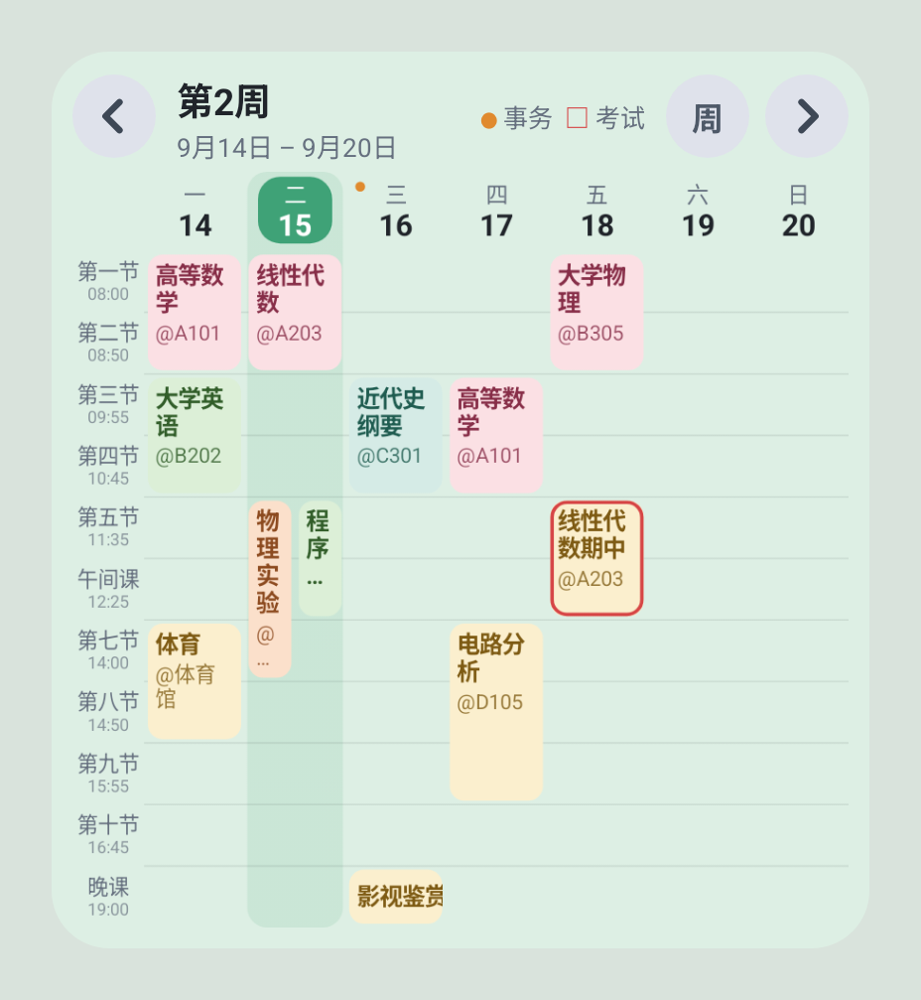
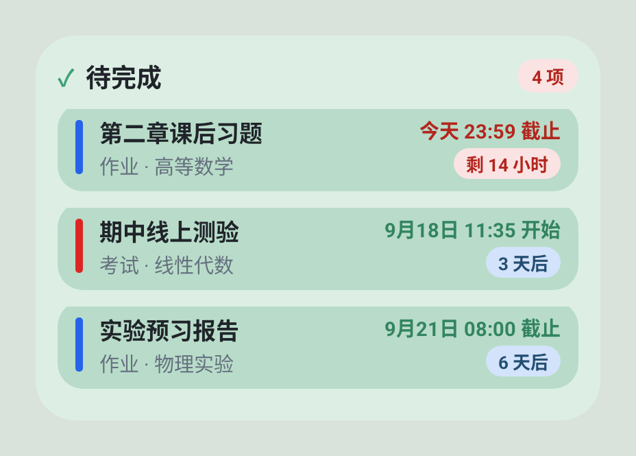
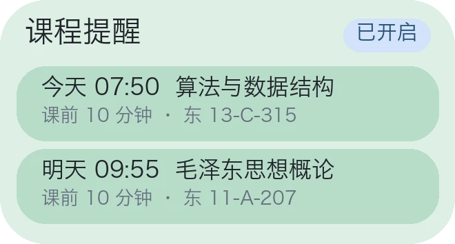
不用打开，
桌面就能看
今日课表、下一节课、提醒、课程日历和笔记待办，再加上已安装组件自带的小组件。
- 课程日历周课表与月历随时切换，查看课程、考试、事务和休息日；点日期打开对应课表
- 组件自带小组件安装并启用声明了小组件的组件后即可添加；名称、界面和内容规则由对应组件管理，点开回到来源组件
- 准点刷新课前 5 分钟、上课、下课这些节点精确刷新，不会显示过期的课
- 四层保障系统周期、WorkManager、闹钟守护链与节次对齐刷新
- 点哪都能进点卡片空白处也能直接打开 App
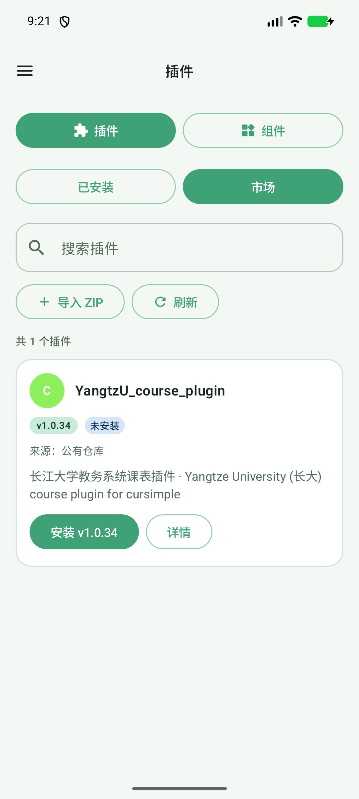
导课与扩展，
都有自己的市场
插件和组件分别提供「已安装 / 市场」入口，搜名称、简介、学校别名或来源都能找到。
- 多个来源一起用保留默认公有仓库，也能分别添加插件与组件来源；一个来源暂不可用不影响其他来源
- 私有 GitHub 仓库在来源设置中登录 GitHub 令牌，读取有权限的仓库；令牌加密保存在当前手机，不随备份迁移
- 详情与安装先看重点简介、版本、来源和实际包大小更清楚，权限与技术信息按需展开，大包显示真实下载进度
- 版本重新核对卡片直接显示更新状态，手动刷新与安装前重新检查版本
雨课堂 v1.2.0 仍是未公开发布的本地 ZIP，需另行导入；公有市场尚未提供该版本。
登录教务，一键导入课表
每所学校由独立插件适配，学校系统改版只需更新插件，不必等应用发版。
学校还没适配？这些方式也能把课表搬进来：
- 手动添加课程
- 二维码 / 口令互传
- AI 识别课表截图
- 导入 JSON 备份
细节都替你想好了
设置一搜就到
按名称、页面、关键词直达任意设置；「常用」放哪几项自己定，长按拖进来即可。
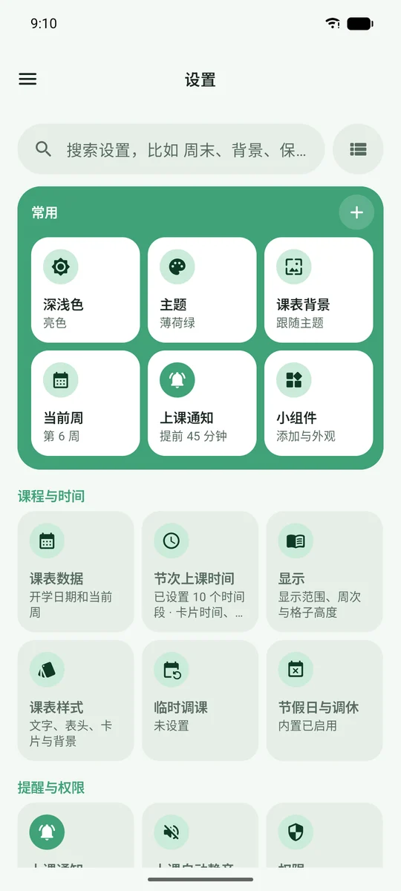
备份不丢
本地 JSON 备份，或同步到任意 WebDAV，事务与备忘录一起带走。
写进系统日历
整学期一键写入手机日历，也能一键撤销；支持导出 .ics。
和同学互传
二维码或口令交换课表，也可以导出一张课表图片发群里。
多学期并存
每个学期独立的课表、作息与周数，随时切换。
语言与时区
简 / 繁 / English 应用内即时切换；时区可独立设置，跨时区上网课也不乱。
应用内更新
发现新版直接下载安装，走国内加速线路；更新后翻页看本版亮点。
四步上手
- 1设置开学日期课表页顶部的提示按钮，或侧边栏进入
- 2安装学校插件在「插件」页的插件市场里找到你的学校
- 3登录教务同步按插件提示登录，课表自动导入
- 4放行通知设置 › 上课通知 › 通知弹出引导，照清单打开
下载课简
v0.7.9最新测试版更新内容
最新正式版：暂无正式版
最新测试版：v0.7.9
0.7.4 与 0.7.9 均为测试版。
其他架构安装包
用手机扫一扫在电脑上看到这里？扫码直接到手机上下载
该下载哪个安装包？
绝大多数手机选 arm64 版。实在不确定就下载通用版 universal，体积稍大但所有设备都能装。
安装时提示「未知来源」或「有风险」？
课简不在应用商店上架，安装包直接来自 GitHub Releases 的自动构建，源代码完全公开。按提示允许浏览器安装应用即可。
上课提醒没有弹出来？
国内厂商对后台限制较严。打开「设置 › 上课通知 › 通知弹出引导」，按清单逐项放行（通知、悬浮横幅、悬浮窗、后台弹出等）即可。
我的学校还不支持，怎么办？
可以先手动添加、用二维码或 AI 识图导入。如果你会一点 JavaScript，欢迎参考插件开发指南为自己的学校写一个插件。